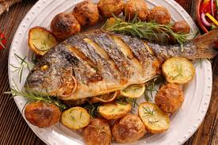

Home
Roasted whole fish with potatoes

Description
This is a whole roasted fish served with roasted potatoes.
The fish is seasoned and cooked until the skin becomes crispy while the inside stays soft and juicy.
It is usually garnished with herbs, lemon, and vegetables, giving it a rich flavor and an attractive presentation.
Ingredients
- Whole fish
- Potatoes
- Lemon slices
- Garlic
- Olive oil or butter
- Salt
- Black pepper
- Fresh herbs (like rosemary or dill)
Steps
- Clean and wash the whole fish
- Make cuts on the fish surface
- Apply salt, pepper, garlic, and oil
- Place lemon slices and herbs inside the fish
- Cut potatoes and season them
- Place fish and potatoes on a baking tray
- Bake in oven until fish is cooked and potatoes are golden
- Serve hot